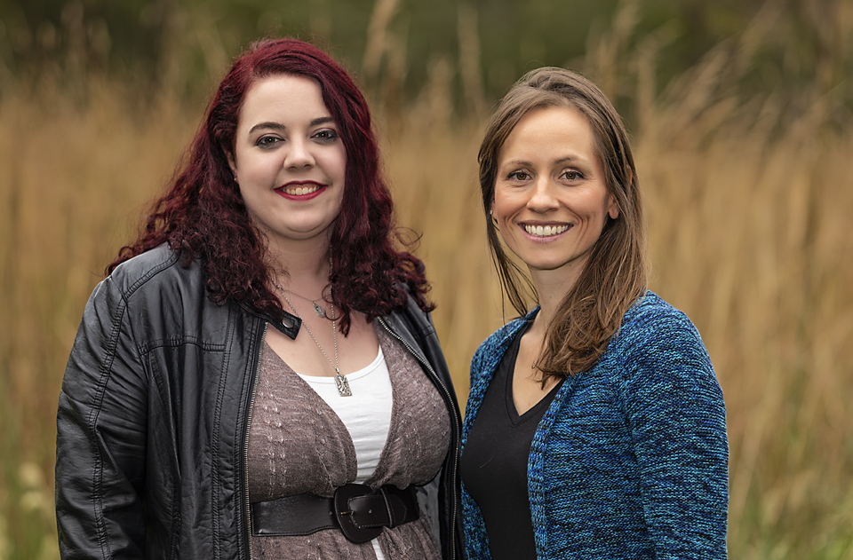
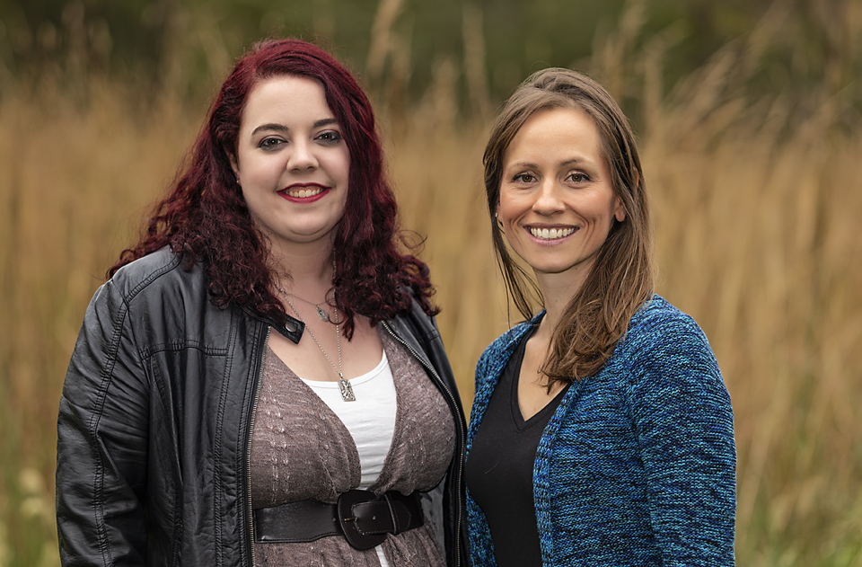

Loading...
 



Pawsitively Pets is a full-service small animal hospital dedicated to advanced medicine and compassionate care.
Our Team
Dr. Morgan
Dr. Morgan grew up in central Illinois and wanted to be a veterinarian from a young age. She graduated from Mt. Zion High School in 2000 and then from the University of Illinois with her veterinary degree in 2006. In 2008 she started Pawsitively Pets Animal Hospital. When she isn't at the hospital she is probably cheering on her kids, Henry and Merle, at their sporting events, hiking with her girlfriend and their 4 dogs, Pumpkin, Olive, Bedee, and Granny, or on a family trail ride with their horses Anna, Jo, and Mo. Of course, all of her pets are rescues - Dr. Morgan's favorite breed!
Dr. Dunaway
Dr Dunaway is a central Illinois native who wanted to be a veterinarian before she can remember. She grew up watching Emergency Vets on Animal Planet and her world has never been the same. She graduated with her undergraduate degree from Trinity Christian college in 2014 and her veterinary degree from Ross University in 2018 after completing her clinical year at the University of Illinois. When not at the clinic, Dr. Dunaway enjoys reading, creative writing, and spending time with her labrador Niamh and her cat Alexa.
Lori
In 2012 Lori began her career at Pawsitively Pets. As part time evolved to full time she assists Dr. Morgan and Dr. Dunaway in the exam room, treatment, and radiology. Outside of the clinic she enjoys bee-keeping, hiking, gardening and road trips. If shes not traveling for fun she and her husband travel between Wisconsin and Michigan to visit their sons. Sometimes their dogs go too while the resident cats manage the homestead.

Melissa
Melissa has been a part of the Pawsitively Pets crew since 2011. Her passion for animals carries over to her job. When she isn't assisting in surgery and dental she is off relaxing, antiquing, and spending time at home with her husband, 4 dogs, and 2 cats. She is especially proud of her daughter as she finishes her degree at EIU. Go Panthers!
Kylie
Kylie grew up in a small town in central Illinois. She graduated from Illinois State University in 2017 where she earned her Bachelor's of Science degree in Zoology with a minor in psychology. After graduation she worked at a non-profit wildlife sanctuary where she took care of large carnivores, reptiles, and small mammals. She joined Pawsitively Pets in 2018 which brings her closer to family and friends and is excited to be a part of the team. In her free time she enjoys going on adventures with her family, playing fetch with her Australian Shepherd (Nala) and feeding her pet rabbit (Luna) carrots.
Rachelle
Hi, I'm Rachelle! I may not be purrfect but our clients seem to love me like a cat loves a nap. I enjoy pouncing on my projects, and am well-motivated by a deadline and a promise of a second breakfast! At home I survey my territory while snuggled up with a good book, lapping up hot jasmine tea with my feline sidekicks Bart and Hyde. Sometimes I will share my blanket with my fiancee and our two canine sidekicks Cyndi and Milla. I'm just frolicking through life, keeping things cheerful and breezy. When it coms to stress I handle it like a hairball... cough up the mess and keep on moving!
Janet
Janet Klump has been working at Pawsitively Pets since November 2017 and has found her niche. She loves animals and enjoys taking care of clients in her position at the front desk. She is a lifelong resident of Decatur, married, and has two sons Adam and Ian. She is also a cat mom to three rescue cats Kelly, Bella, and Gemini. Janet enjoys listening to live music, watching movies, spending time with family, and supporting her son at the events he plays.
Get in Touch
- 4004 E Fulton Ave, Decatur, IL 62521
- (217) 233-7297
- 1-800-728-4047